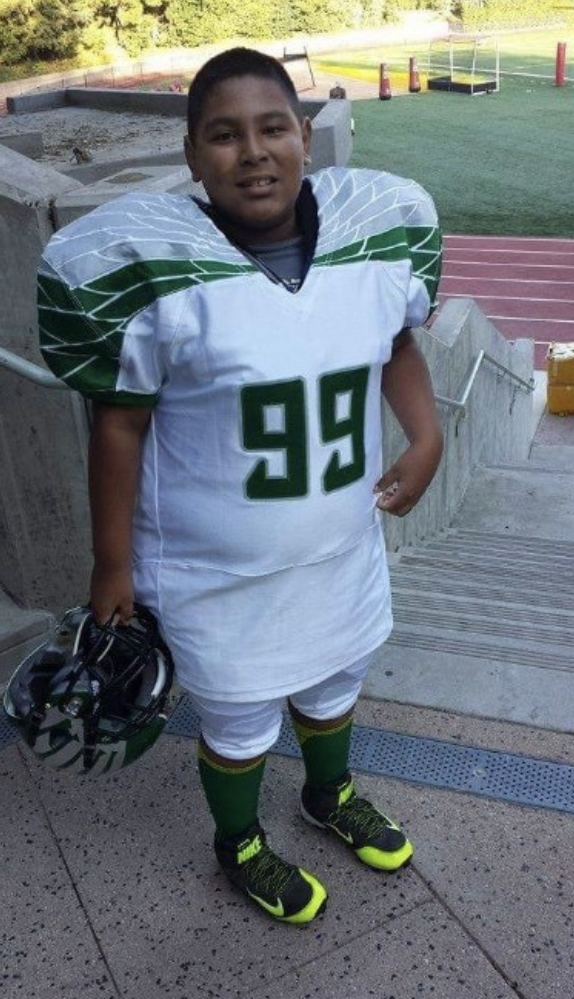
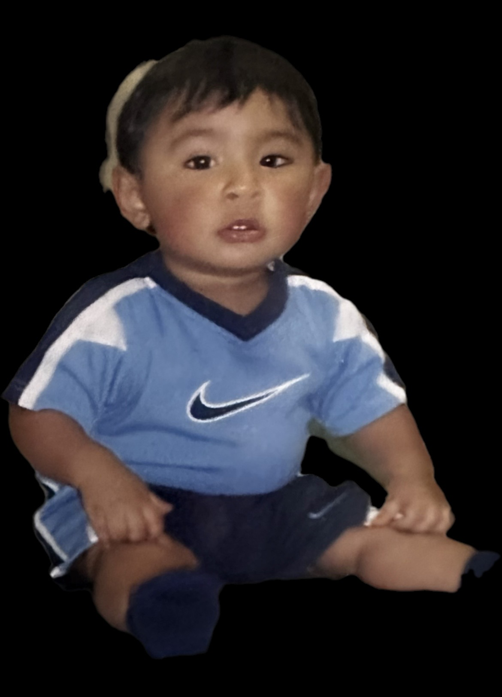

Section 1
Background

Im Hispanic and Born & raised in Inglewood CA.
Bio Portrait
A scroll timeline exploring my background, artistic interests, and creative growth.
Section 1

Im Hispanic and Born & raised in Inglewood CA.
Section 2

My artistic intrests are photoshop and illistrator for graphic design, blender and maya for animation, and lightroom classic for digital photography.
Section 3
My favorite song currently is "BM's" by Del the funky homosapien.
Section 4
My focuses are mostly on animation with character movement, design, and storytelling, and graphic design for creating ideas or making posters.
Section 5
I’ve had some growth of my artistic abilities with graphic design and animation classes I’ve taken at LMU and in Santa Monica college.
Back to top ↑